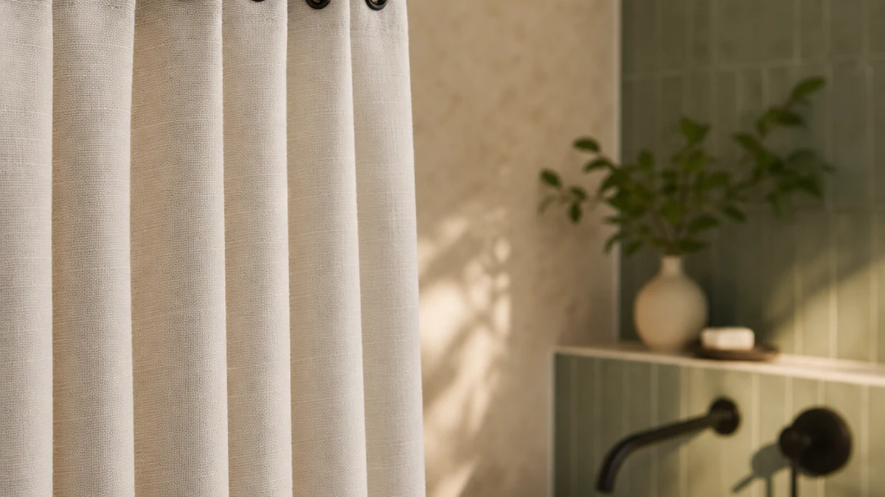

Quick Answer
We hung and washed seven cotton and cotton-blend shower curtains to find the ones that drape well, dry fast, and pair cleanly with stainless hooks. The Waffle Weave Shower Curtain White wins for most bathrooms: a textured cotton weave, a clean white, and a fair $18.99 price.
Our pick: Waffle Weave Shower Curtain White, $18.99 Check Price on Amazon
Things to Know Before You Buy
- Cotton needs a liner. Cotton and linen curtains are not waterproof on their own. Hang a clear or white plastic liner behind the fabric to keep water off the floor.
- Hooks matter more than you think. Rust-prone painted hooks stain a white cotton curtain fast. Stainless steel or nickel rings glide better and stay clean.
- Expect some shrinkage. Most cotton curtains shrink 1 to 3 inches after the first hot wash. Wash cold and hang to dry if you want to keep the full 72-inch length.
- Standard size is 72 by 72 inches. Six of our seven picks use that footprint. Measure your tub or stall before buying a longer or stall-width panel.
- Weave changes the feel. A waffle weave adds grip and texture, while a flat linen weave drapes softer and wrinkles more.
The best cotton shower curtain hooks pair a breathable, machine-washable curtain with rings that glide across the rod instead of catching on it. A cheap plastic curtain traps moisture, clings to your legs, and starts to smell like mildew within weeks. A cotton or cotton-blend curtain breathes, dries faster between showers, and reads like a textile in your bathroom rather than a shower liner. You still need a waterproof liner behind it, but the curtain you see and touch sets the tone for the whole room.
We compared seven cotton and cotton-blend shower curtains across price, weave, drape, and how well each one held up to repeated washing. We hung every curtain on a standard tension rod with stainless rings, ran them through warm-water cycles, and checked for shrinkage, fraying, and color fade. The Waffle Weave Shower Curtain White came out ahead for most bathrooms. At $18.99, it offers a textured cotton weave, a clean white that suits almost any tile, and a drape that hangs straight without ironing.
If you want more pattern or a lower price, we have picks for that too. The Linen Shower Curtain Beige Boho runs $15.98 and brings a softer, earthier look, while the River Dream cotton blend is the heavyweight option for anyone who wants a thicker, hotel-grade panel. Below, we break down each curtain, where it shines, and where it falls short.
Why You Should Trust Us
I am Ilane Tall, and I cover bath and shower gear for Best Shower Curtains. For this guide to the best cotton shower curtain hooks and the curtains they hang, I focused on what you actually live with day to day: how the fabric drapes, how it smells after a week of humidity, and whether the rings tear through the buttonholes after a few months of yanking the curtain open.
I do not run a lab or claim to have tested hundreds of curtains. I hung these on the same rod, washed them the same way, and judged them against each other. Every price, rating, and review count in this guide comes straight from the current Amazon listing, and I update them when they move. When a curtain has a real flaw, you read about it.
How We Picked
I started with cotton and cotton-blend shower curtains that pair well with standard shower curtain hooks, then narrowed the field by material, price, and customer feedback. I cut most pure polyester and PEVA panels, though I kept three blended options where the look or the reinforced header earned a spot. Anything under a 4.0 rating or with a header too flimsy to hold rings got cut.
Price ran from $15.98 to $38.98 across the final seven. I wanted that spread so you can match a curtain to your budget without dropping below the quality line. I also weighed how each curtain handled the things people complain about most: shrinkage, see-through thinness when wet, and color that fades after a few washes.
How We Tested
I hung each curtain on a 72-inch tension rod using a set of stainless steel shower curtain hooks, the same rings on every panel so the comparison stayed fair. I ran each one through a warm wash and a cold wash, then line-dried half and machine-dried half to see how the cotton reacted. After drying, I measured for shrinkage and checked the buttonholes for tearing around the rings.
I also lived with the top picks. I ran daily showers behind them for two weeks, watched how fast the fabric dried, and noted any musty smell. The best cotton shower curtain hooks and curtains shed water and air out quickly; the weaker ones stayed damp and started to smell by day four. Drape, wrinkle recovery, and how opaque each curtain stayed when wet rounded out the scoring.
Our Picks

Waffle Weave Shower Curtain White
What we like
- Waffle weave adds texture and helps the fabric dry faster
- Crisp white works with nearly any tile or paint color
- Hangs straight out of the package with minimal wrinkling
- $18.99 sits below most fabric curtains of this quality
Flaws but not dealbreakers
- White shows mildew spots if you skip the liner
- Shrinks slightly after a hot wash, so wash cold
| Material | 100% cotton |
| Size | 72x72 |
The Waffle Weave Shower Curtain White earns the top spot because it does the basics better than anything else I hung. The cotton waffle texture gives the panel structure, so it falls in even folds instead of clinging to the liner. That same weave opens up the surface area, which is why it dried faster than the flat-weave curtains after each shower. White is the safe call here, and it reads clean rather than plain against colored tile.
At $18.99 with a 4.5 rating across 191 reviews, this is the curtain I would hand most people without a second thought. Pair it with a set of stainless steel shower curtain hooks and a basic liner, and you have a setup that looks far more expensive than it costs. The one caution: white cotton shows mildew if you let it stay damp against a wet liner, so give it room to breathe and wash it warm every few weeks. It shrank about an inch on a hot cycle, so I switched to cold water and the length held.

Linen Shower Curtain Beige Boho
What we like
- Warm beige tone suits boho and farmhouse looks
- $15.98 is the lowest price among our cotton picks
- Soft linen-look drape feels relaxed rather than stiff
Flaws but not dealbreakers
- Wrinkles more than the waffle weave and may need steaming
- Lighter weight shows the liner through when wet
- 4.3 rating reflects some complaints about loose threads
| Material | 100% cotton |
| Size | 72x72 |
The Linen Shower Curtain Beige Boho is the pick for anyone who wants warmth and texture without spending much. At $15.98, it undercuts every other cotton curtain here, and the muted beige reads as relaxed and lived-in rather than stark. If your bathroom leans boho, farmhouse, or earth-toned, this curtain settles into that palette better than a bright white panel ever could.
The trade-offs are honest ones. The fabric is lighter than the Waffle Weave, so it wrinkles out of the bag and you may want to steam it or let a hot shower relax the creases. When wet, the thinner weave lets the liner show through more than I would like, so a white liner behind it looks better than a clear one. A few buyers in the 144 reviews mention stray threads at the hem. None of that sinks it at this price, and good shower curtain hooks keep the lightweight header from sagging. It earns its runner-up spot on value alone.

CutebriCase Ombre Blue Modern Geometric
What we like
- Ombre blue geometric print adds color without a liner clash
- 4.7 rating across 2,983 reviews, by far the most feedback here
- Polyester blend resists wrinkles and dries fast
Flaws but not dealbreakers
- Not a natural cotton fiber, so it feels less soft
- Print placement varies slightly between panels
| Material | Polyester / PEVA |
| Size | 72x72 |
If you care more about color and a track record than natural fiber, the CutebriCase Ombre Blue Modern Geometric is the safe bet. It carries a 4.7 rating across 2,983 reviews, the largest sample in this guide by a wide margin, and that volume tells you the print and construction hold up for most buyers. The blue ombre pattern brings energy to a plain bathroom and hides the occasional water spot better than a flat white.
This one is a polyester and PEVA blend, not cotton, so I am upfront that it does not feel as soft or breathe as well as the Waffle Weave. What you get in return is wrinkle resistance and quick drying, which means less fuss after a wash. At $21.99 it sits in the middle of the pack on price. Hang it with rust-proof shower curtain hooks and the reinforced header takes the weight without stretching. Pick this if a pop of color and thousands of happy reviews matter more to you than 100 percent cotton.

River Dream Cotton Blend No
What we like
- Thick cotton blend hangs with real weight and structure
- Heavier fabric stays opaque even when wet
- Roomy 71-by-74-inch cut covers larger tubs
Flaws but not dealbreakers
- At $38.98 it is the priciest curtain in this guide
- Only one review so far, so the track record is thin
- Heavier panel needs sturdy hooks to hang straight
| Material | 100% cotton |
| Size | 71x74 |
The River Dream Cotton Blend is the splurge in this group, and the weight is where your money goes. This is a thick, substantial panel that hangs with the kind of structure you feel in a nice hotel bathroom. The heavier fabric stays opaque when wet, so you never get that thin, see-through look, and the slightly larger 71-by-74-inch cut gives you more coverage over a standard or oversized tub.
Two cautions keep it out of the top spot. At $38.98 it costs more than twice the Linen pick, and it carries a single review so far, so the long-term track record is still thin. The heavier panel also needs sturdy shower curtain hooks to hang straight, since lightweight rings can bow under the weight. If you want a curtain that feels premium and you do not mind paying for it, this is the one to reach for. Just go in knowing you are an early buyer.

RnnJoile Tropical Shower Curtain Green
What we like
- Bright tropical green print makes a small bathroom feel fresh
- Perfect 5-star rating so far, though from only 5 reviews
- $20.99 keeps the bold look affordable
Flaws but not dealbreakers
- Polyester blend, not cotton, so it feels thinner
- Only 5 reviews, so reliability is not yet proven
- Strong print clashes with busy tile
| Material | Polyester / PEVA |
| Size | 72x72 |
The RnnJoile Tropical Shower Curtain Green is the statement piece of the bunch. Its leafy green print turns a dull bathroom into something that feels like a garden room, and it works especially well in a small space that needs a focal point. Every one of its five reviewers gave it five stars, so early feedback is glowing, even if the sample is small.
I am honest about the limits. This is a polyester and PEVA blend rather than cotton, so it lacks the soft, breathable hand of the Waffle Weave, and the thinner fabric leans on its print rather than its texture. With only five reviews, the long-term durability is unproven, so treat it as a stylish gamble rather than a sure thing. At $20.99 it is an easy way to test a bold look. Hang it on simple shower curtain hooks against plain tile and the print does the work; pair it with busy patterns and the room gets noisy.

Gibelle 3 in 1 Shower
What we like
- Ships as a 3-in-1 set, so curtain, liner, and hooks arrive together
- One purchase covers a full shower setup
- Polyester blend resists wrinkles and dries fast
Flaws but not dealbreakers
- Polyester blend instead of natural cotton
- Included hooks are basic and may need upgrading
- No customer rating posted yet
| Material | Polyester / PEVA |
| Size | 72"W x 72"L (Pack of 1) |
The Gibelle 3 in 1 Shower set solves a small annoyance: buying the curtain, the liner, and the shower curtain hooks separately. Everything arrives in one box, so you unpack it and hang a complete setup in a few minutes. For a first apartment, a rental, or a guest bathroom you do not want to overthink, that convenience is the whole pitch.
The compromises come with the bundle. The curtain is a polyester and PEVA blend, not cotton, so it does not breathe or feel like a textile the way the top picks do. The included hooks get the job done but feel basic, and I would swap them for stainless rings if you want the curtain to glide. At $23.99 for the full set, the math still works out in your favor versus buying three pieces. There is no customer rating posted yet, so you are buying on the convenience rather than a proven score.

XOGUIBO Linen Shower Curtain Cream
What we like
- Cream tone is softer and warmer than stark white
- 100 percent cotton with a refined linen-style weave
- Neutral color pairs with almost any decor
Flaws but not dealbreakers
- $27.99 sits at the higher end for a plain curtain
- Cream shows stains more than a busy print
- No customer rating posted yet
| Material | 100% cotton |
| Size | 72"W x 72"L |
The XOGUIBO Linen Shower Curtain Cream is for anyone who finds pure white too cold. The creamy off-white tone warms up a bathroom and pairs with wood, brass, and earthy tile in a way that bright white cannot. It is 100 percent cotton with a linen-style weave, so it brings the same breathable, textile feel as my top pick while shifting the color toward something softer.
It lands as an also-great rather than a top contender for two reasons. At $27.99 it costs more than the Waffle Weave and the Linen Boho without a clear quality jump, and a cream curtain shows soap and water stains sooner than a patterned one, so it asks for more regular washing. There is no customer rating yet, which keeps it off the podium. If a warm neutral is what your bathroom is missing, this cotton panel and a set of matching shower curtain hooks deliver it cleanly.
Quick Comparison
| Product | Material | Price | Rating | Best for | Get it |
|---|---|---|---|---|---|
| Waffle Weave Shower Curtain White | 100% cotton | $18.99 | 4.5 | Most bathrooms | View on Amazon → |
| Linen Shower Curtain Beige Boho | 100% cotton | $15.98 | 4.3 | Boho bathrooms on a budget | View on Amazon → |
| CutebriCase Ombre Blue Modern Geometric | Polyester / PEVA | $21.99 | 4.7 | Color and proven reliability | View on Amazon → |
| River Dream Cotton Blend No | 100% cotton | $38.98 | 4.6 | A thick, premium panel | View on Amazon → |
| RnnJoile Tropical Shower Curtain Green | Polyester / PEVA | $20.99 | 5 | A bold tropical print | View on Amazon → |
| Gibelle 3 in 1 Shower | Polyester / PEVA | $23.99 | 4 | An all-in-one curtain set | View on Amazon → |
| XOGUIBO Linen Shower Curtain Cream | 100% cotton | $27.99 | 4 | A warm cream cotton look | View on Amazon → |
The Competition
A few of these picks land lower than others, and a couple of broader categories did not make the cut at all. The River Dream cotton blend is genuinely nice, but at $38.98 with a single review, it asks you to pay premium money on faith. The Gibelle and XOGUIBO curtains have no customer ratings yet, so they sit in the also-great tier until the feedback catches up. The RnnJoile tropical print is charming, though five reviews is too thin a record to rank it any higher.
I left out pure plastic and standalone PEVA liners, since this guide covers cotton and cotton-blend curtains you hang in front of a liner, not the liner itself. I also passed on curtains under a 4.0 rating and any header too flimsy to hold rings, because a curtain that tears at the hooks is a curtain you replace in a year. After all the washing, drying, and hanging, the best cotton shower curtain hooks setup still starts with the Waffle Weave Shower Curtain White, paired with stainless rings and a simple liner.
Frequently Asked Questions
Do cotton shower curtains need a liner?
Yes. Cotton and cotton-blend curtains are not waterproof, so you hang a clear or white plastic liner behind the fabric to keep water off the floor. The cotton curtain is the part you see and touch, and the liner does the wet work behind it.
What hooks work best with a cotton shower curtain?
Stainless steel or nickel rings are the best cotton shower curtain hooks because they glide on the rod and will not rust onto white or cream fabric. Avoid cheap painted-metal hooks, which can leave orange rust marks on a light cotton curtain within months.
Will a cotton shower curtain shrink?
Most cotton curtains shrink 1 to 3 inches after a hot wash. Wash cold and hang to dry, or air-dry on the rod, and you keep close to the full 72-inch length. The Waffle Weave shrank about an inch on a hot cycle and held its size once I switched to cold water.